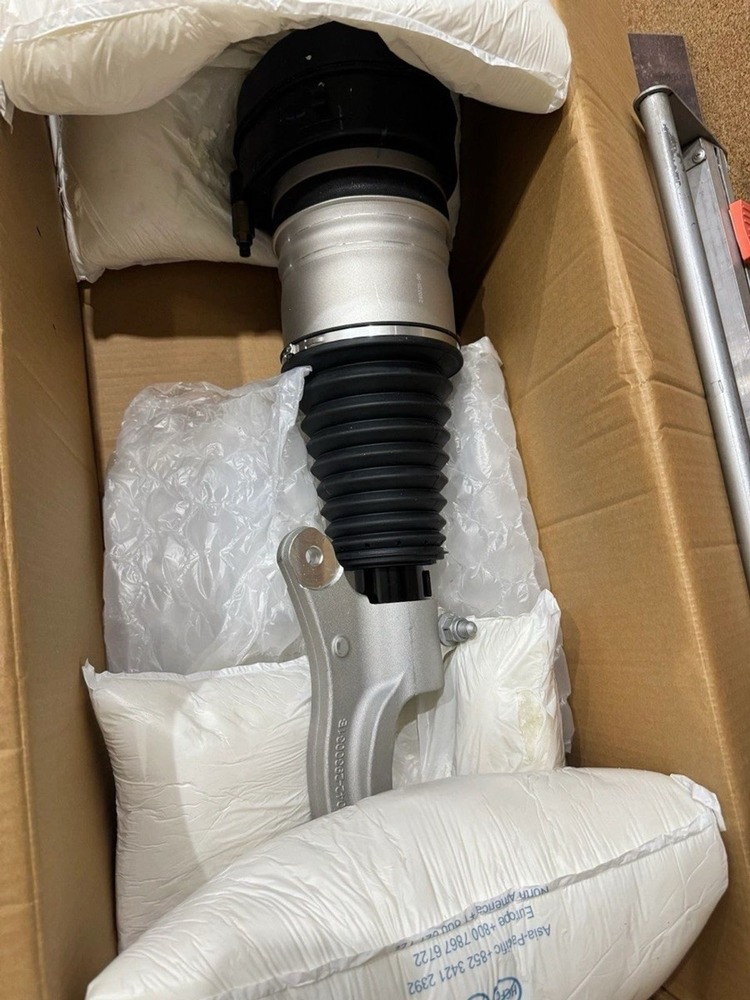
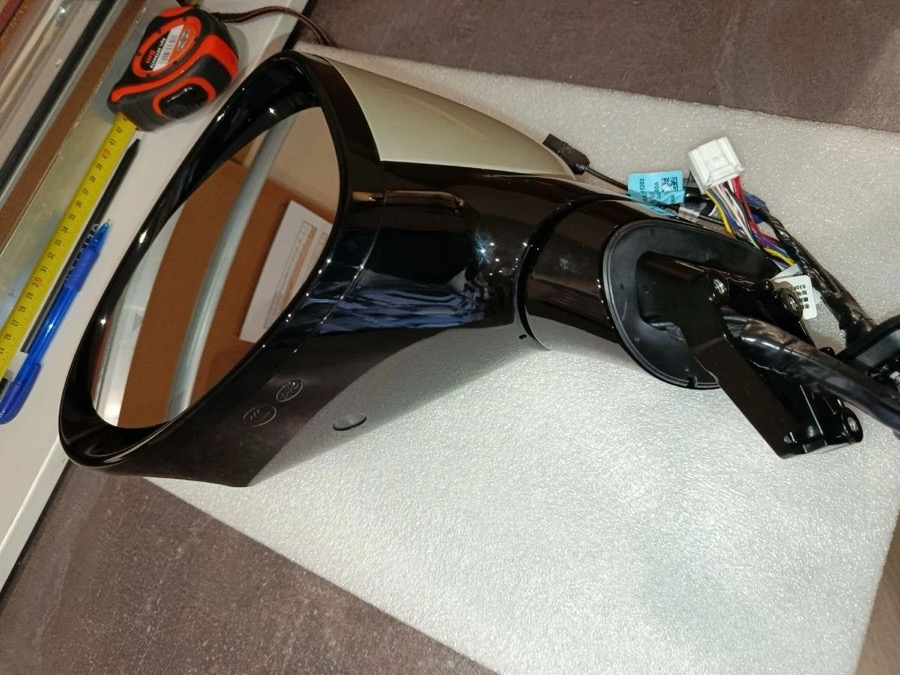
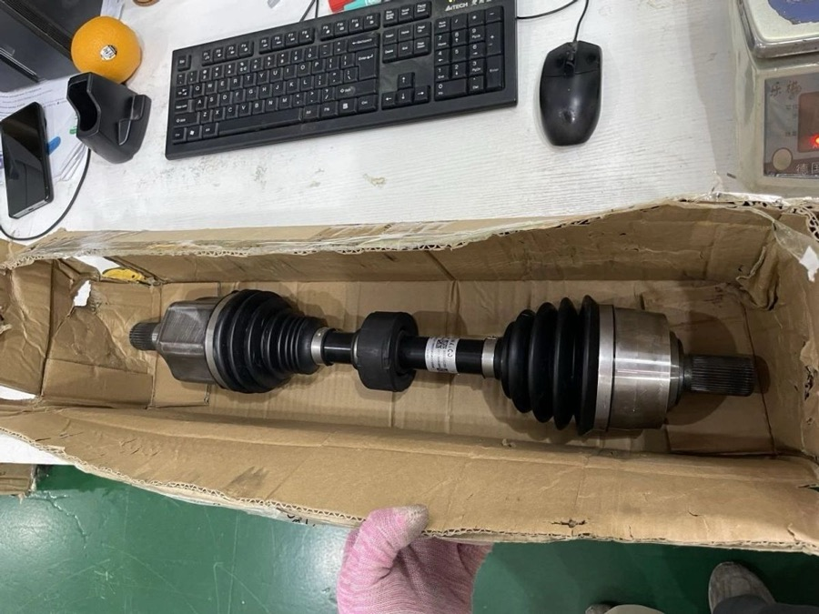
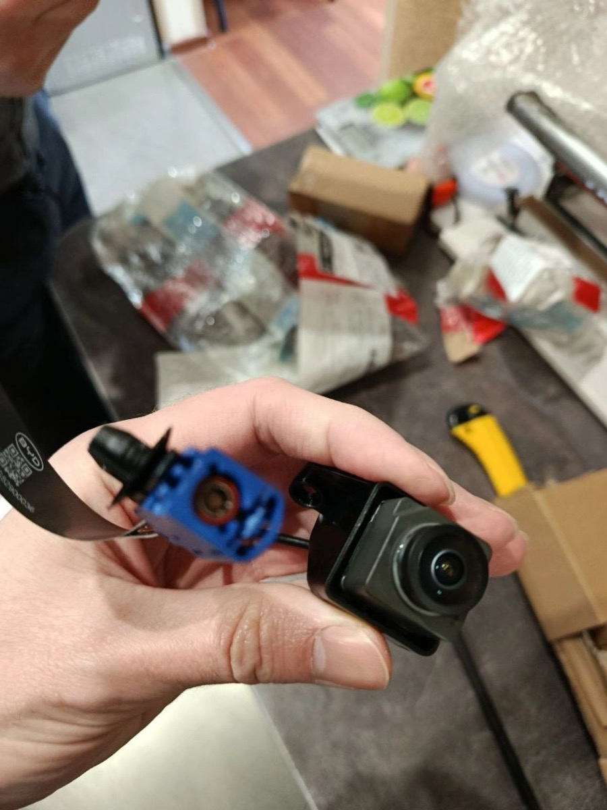
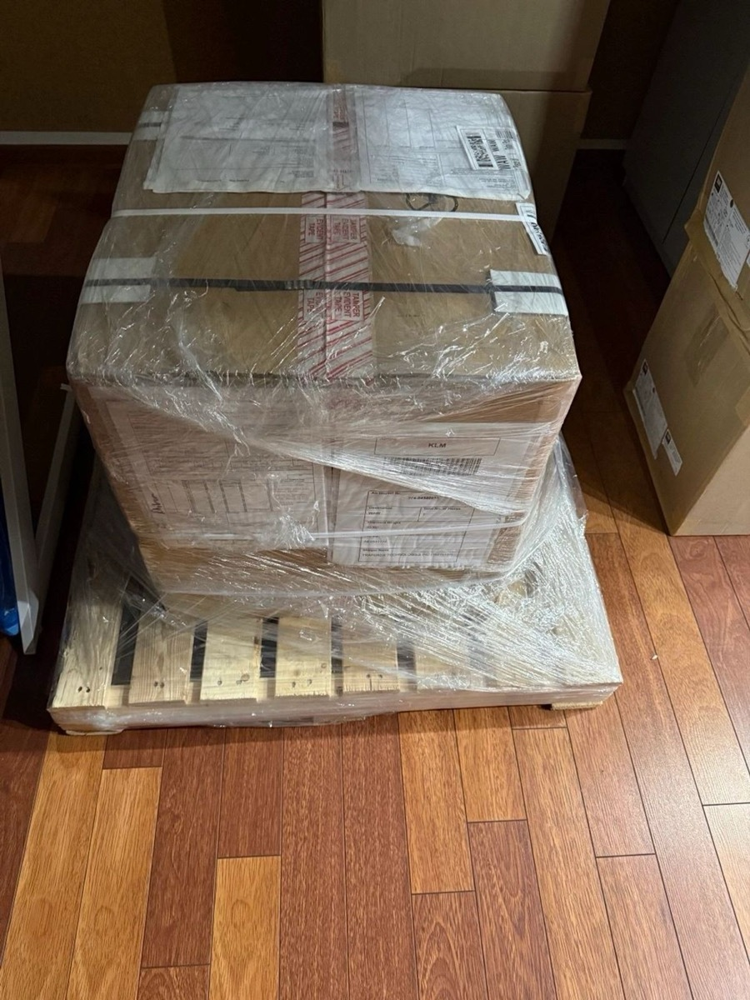
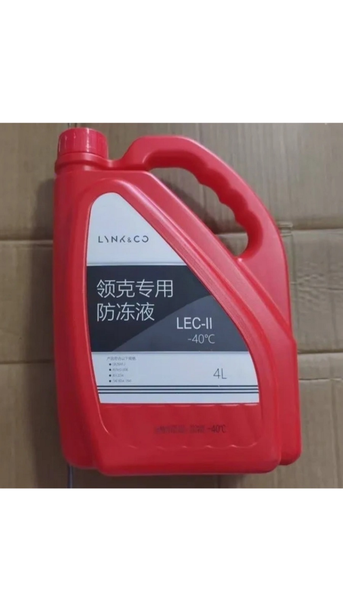
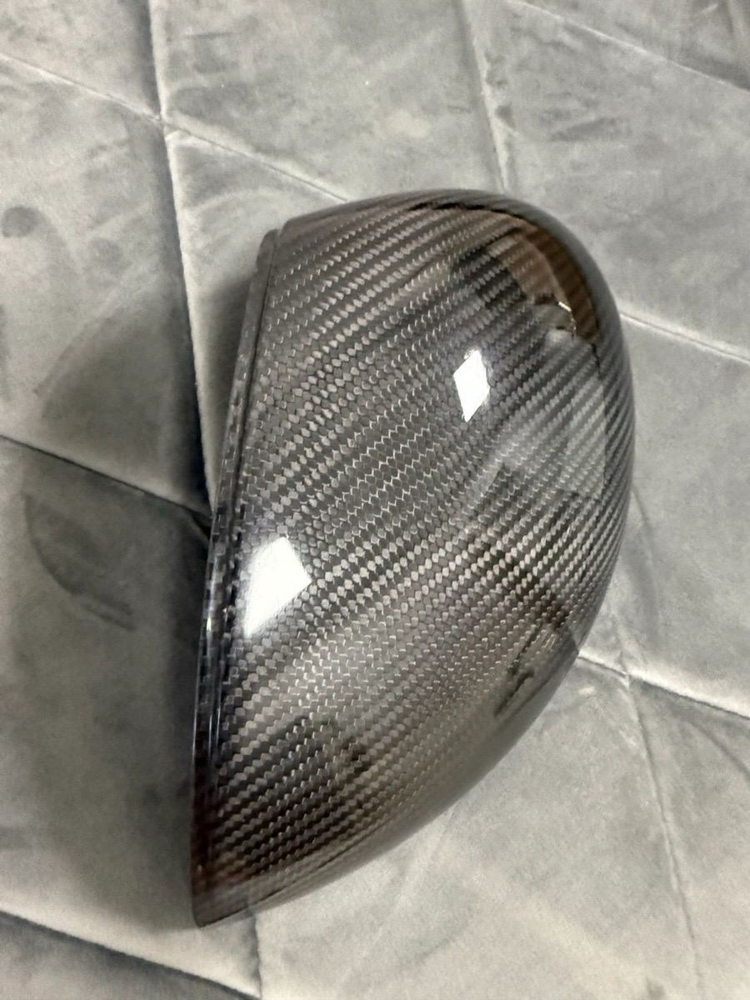
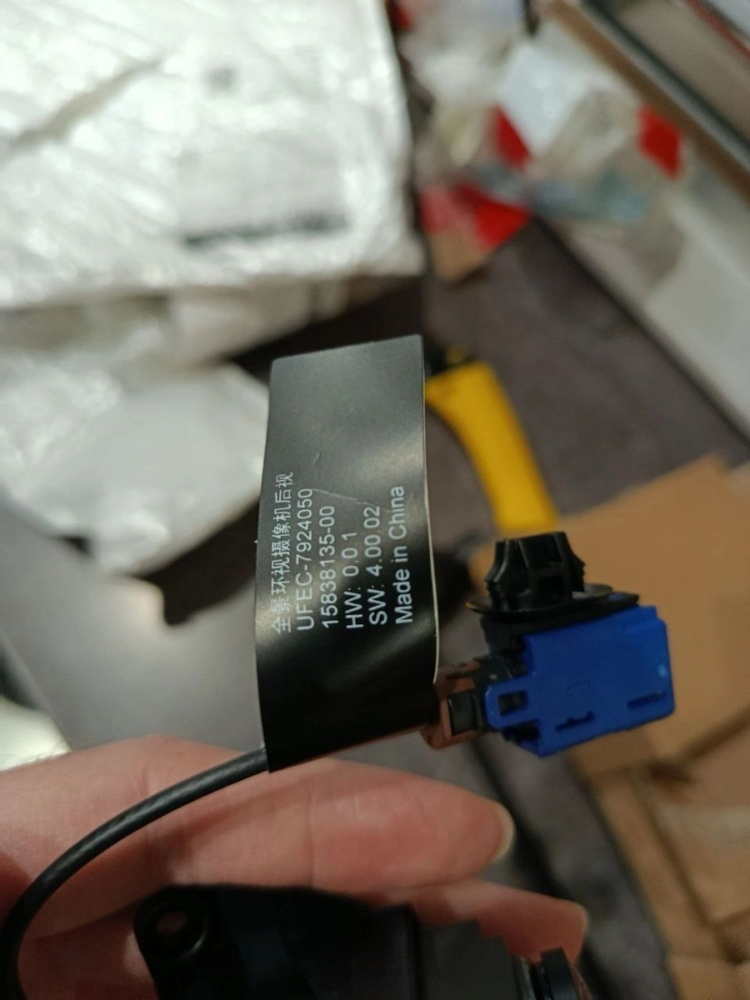
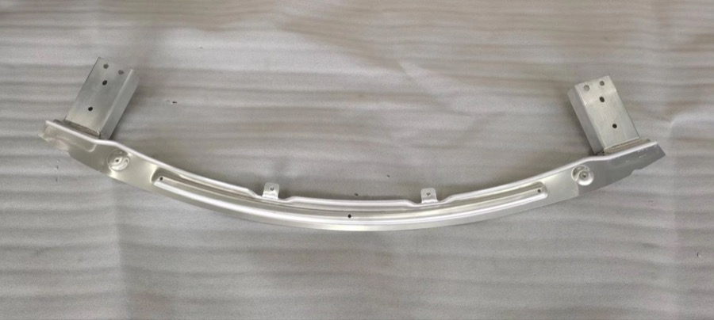

⚙
ТО и расходники
Масло · фильтры · щетки · колодки · свечи
Оригинал и OEM от официальных дилеров. Подбор по VIN. Авиа от 14 дней, море от 60.
Масло · фильтры · щетки · колодки · свечи
Бамперы · крылья · двери · фары · стекло
АКБ · датчики · блоки управления · проводка
Амортизаторы · рычаги · диски · стойки

Упаковываем запчасти компактно и безопасно, чтобы уменьшить вес, объем и итоговую стоимость доставки из Китая.
Отправьте VIN — мы проверим совместимость перед заказом.


Для многих позиций можно подобрать качественный аналог от производителя, который поставляет детали на конвейер или работает в той же спецификации. Выбор за вами.
С доставкой и таможенными платежами. Точную цену менеджер подтверждает после проверки VIN, комплектации и наличия в Китае.
| Запчасть | Пример авто | Цена от |
|---|---|---|
| Комплект ТО: фильтры + масло | BYD Song Plus | от $80 |
| Тормозные колодки, комплект | BYD Han / Seal | от $45 |
| Передняя фара | Zeekr 001 | от $350 |
| Передний бампер | BYD Song Plus | от $220 |
| Лобовое стекло | Li Auto L7 | от $280 |
| Амортизатор | BYD Tang | от $120 |
Это не каталог и не публичная оферта: по китайским авто одно название детали может иметь несколько версий. Именно поэтому финальную сумму фиксируем после VIN.
Через форму, Telegram или по телефону
Точная цена «под ключ» после вашего подтверждения
Фото детали, маркировка и упаковка вам в мессенджер
Авиа от 14 / море от 60, статусы на ключевых этапах
Подбираем даже редкие запчасти под конкретный автомобиль.
Работа по VIN, быстрый подбор и стабильные поставки с любыми объемами.
Не знаете артикул? Отправьте модель авто, VIN по возможности и название детали — менеджер сориентирует, что реально нужно.
Подобрать запчастьРаботаем с частными клиентами, СТО, автосалонами, страховыми, фондами и лизинговыми компаниями. Для владельца авто все просто: согласовали деталь, цену и доставку — получили понятное сопровождение до выдачи. Если нужны документы для учета или компенсации, подготовим полный пакет.
Фиксируем сумму и условия до оплаты. При необходимости предоставляем счет, квитанцию и документы для учета, компенсации или отчетности.
Показываем деталь, маркировку, состояние и упаковку до отправки из Китая, чтобы не было сюрпризов после получения.
Если мы ошиблись при подборе по VIN, решаем вопрос за наш счет. Это ключевая причина просить VIN перед оплатой.
После согласования цены вы понимаете бюджет, маршрут и срок. Дальше менеджер ведет заказ до получения в Украине.
Фотографируем то, что реально едет клиентам: упаковку, маркировку, состояние деталей и проверку перед отправкой.











Перед первым заказом важны не красивые обещания, а понятные подтверждения: реквизиты, фото, ответственность за подбор и контроль маршрута.
Перед оплатой клиент получает сумму, условия, официальные реквизиты и документы, если они нужны для учета или компенсации.
Официальная оплатаФото детали, маркировку и упаковку отправляем до отправки. Клиент видит реальный товар, а не стоковую картинку.
ФотоотчетПодбор по VIN снимает большую часть рисков по комплектации. Если ошибка с нашей стороны — берем ответственность на себя.
VIN-проверкаЧасто причина — в программном обеспечении автомобиля. Для BYD есть отдельная воронка цифрового сервиса.
Проверяем все системы авто
Чаще всегоАктуальные версии систем
Настройка под вас
Стабильная работа систем
Коротко про VIN, совместимость, оригинал/OEM и доставку из Китая.
Можно, если есть точное название детали, фото или артикул. Но VIN заметно снижает риск ошибки по комплектации.
Кузовные детали, оптику, электронные блоки, датчики, ходовую, расходные материалы, детали салона и редкие позиции.
Показываем доступные варианты и объясняем разницу. Оригинал важен для критичных узлов, OEM часто выгоднее для типовых деталей.
Ориентир: авиа примерно от 14 дней, море примерно от 60 дней. Точный срок зависит от наличия, габаритов и маршрута.
После согласования позиции выставляем официальный платеж с документами. Условия и сумму подтверждает менеджер до оплаты.
Если ошибка произошла при нашем подборе по VIN — решаем вопрос за наш счет. Если VIN не было, риски обсуждаем отдельно.